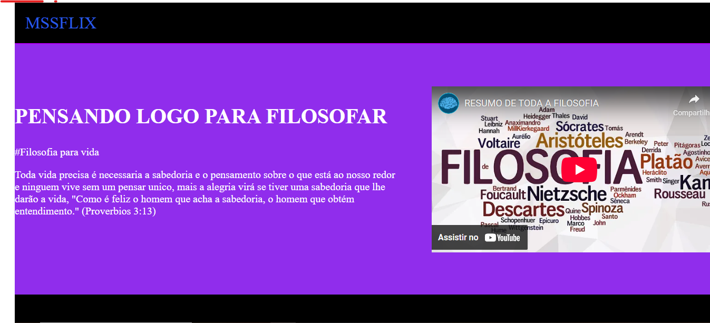

Meus projetos

Minha Pagina Website: Um Website Personalizada
Este projeto é uma página web que apresenta uma lista de videos favoritos, incluindo informações sobre os diversos pensamentos filosoficos. A página é estilizada com CSS para uma visualização agradável e usa videos filosoficos do youtube.